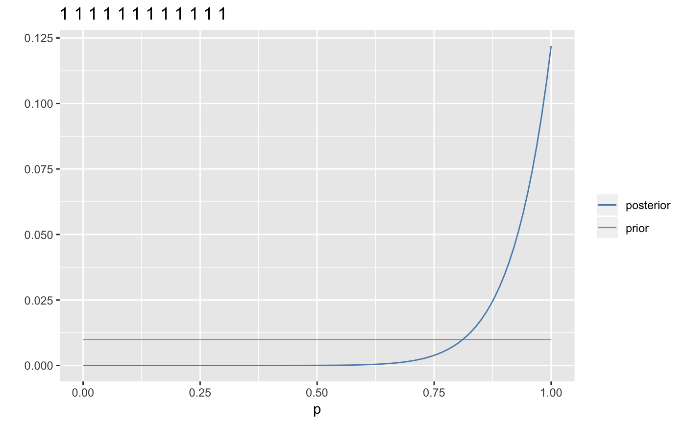

This intended as a black-box example with a small data set to illustrate the results Bayesian updating.
CoinExample(data = "HHTT", p = seq(0, 1, length.out = resolution + 1), prior = 1, results = c("plot", "data"), steps = FALSE, geom = geom_line, alpha = 0.7, resolution = 100, filter = TRUE, ...)
Arguments
| data | a vector of 0's and 1's or a character string with two characters representing success/failure or head/tails from the bernoulli experiment. |
|---|---|
| p | a vector of probabilites to update. |
| prior | a vector of prior values at each probability in |
| results | either |
| steps | a logical indicating wether the process should be shown step-by-step or for all the data at once. |
| geom | a geom used for plotting. Good choices include
|
| alpha | opacity used for the plot |
| resolution | if |
| ... | additional arguments passed to the geom. |
Examples
#>#> # A tibble: 5 x 6 #> p prior likelihood posterior d n #> <dbl> <dbl> <dbl> <dbl> <chr> <int> #> 1 0 0.2 0 0 11001 5 #> 2 0.25 0.2 0.0879 0.132 11001 5 #> 3 0.5 0.2 0.312 0.471 11001 5 #> 4 0.75 0.2 0.264 0.397 11001 5 #> 5 1 0.2 0 0 11001 5CoinExample("HHTTH", p = seq(0, 1, by = 0.25), prior = c(.1, .2 , .4, .2, .1), geom = geom_col, alpha = 0.5)#>#>#> # A tibble: 25 x 6 #> p prior likelihood posterior d n #> <dbl> <dbl> <dbl> <dbl> <chr> <int> #> 1 0 0.2 0 0 1 1 #> 2 0.25 0.2 0.25 0.1 1 1 #> 3 0.5 0.2 0.5 0.2 1 1 #> 4 0.75 0.2 0.75 0.3 1 1 #> 5 1 0.2 1 0.4 1 1 #> 6 0 0 0 0 11 2 #> 7 0.25 0.1 0.0625 0.0333 11 2 #> 8 0.5 0.2 0.25 0.133 11 2 #> 9 0.75 0.3 0.562 0.3 11 2 #> 10 1 0.4 1 0.533 11 2 #> # … with 15 more rows#>CoinExample("HHTTH", p = seq(0, 1, by = 0.25), alpha = 0.5, steps = TRUE, geom = geom_col, filter = n %in% c(4,5))#>CoinExample("HHTTHTHHTHHH", alpha = 0.9, steps = TRUE)#>CoinExample("HHTTHTHHTHHH", alpha = 0.9, steps = TRUE)#>#>CoinExample("HHHHHHHHHHHH", alpha = 0.9)#>CoinExample("HHHHHHHHHHHH", alpha = 0.9, steps = TRUE)#>